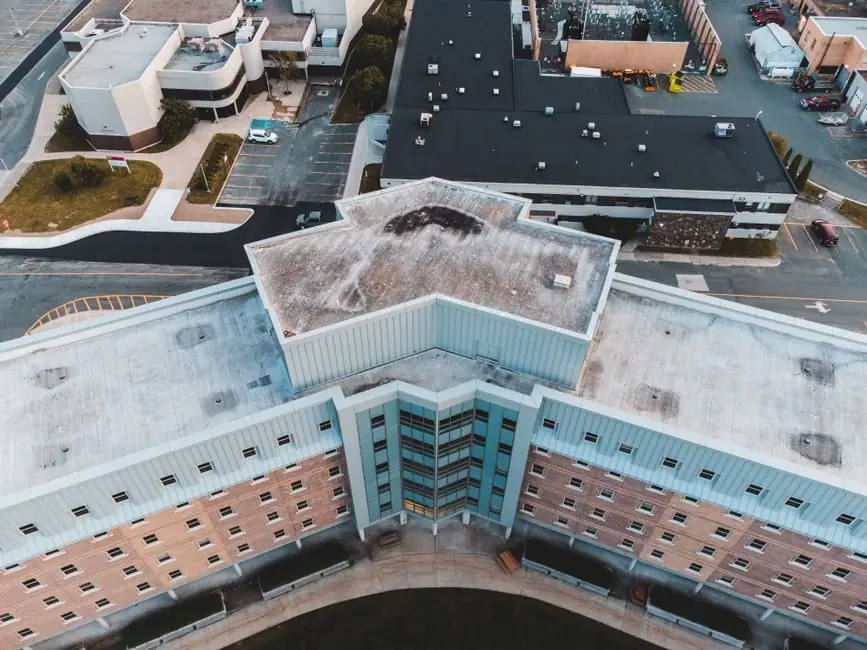

Why commercial roofing maintenance matters in Lubbock
Learn why regular commercial roofing maintenance in Lubbock is essential for protecting your investment and ensuring longevity.

Commercial roofing maintenance is essential for prolonging the life of your roof and preventing costly repairs. Regular maintenance can save businesses in Lubbock significant expenses over time.
This article explores the importance of commercial roofing maintenance, its benefits, and how often you should schedule it. It also addresses common mistakes made during maintenance and when to call a professional.
What is commercial roofing maintenance?
Commercial roofing maintenance is a systematic approach to inspecting, repairing, and maintaining commercial roofs to ensure their longevity and functionality. This maintenance includes regular inspections, cleaning, and addressing minor issues before they escalate into major problems.
Why is commercial roofing maintenance important?
In Lubbock, the local climate can be harsh on roofs, with extreme temperatures and occasional storms. Regular maintenance helps identify vulnerabilities in your roof, such as wear and tear, leaks, or damage from hail and wind. Addressing these issues promptly can prevent water damage, mold growth, and structural issues, ultimately protecting your investment.
What are the benefits of regular maintenance?
Regular commercial roofing maintenance offers several key benefits:
- Cost savings: Routine inspections can identify small issues before they require expensive repairs, such as emergency roof repair Texas.
- Extended lifespan: A well-maintained roof can last significantly longer than one that is neglected, often exceeding 20 years.
- Improved energy efficiency: Regular maintenance can help maintain insulation and prevent leaks, which can lead to reduced energy costs.
- Enhanced property value: A well-maintained roof contributes to the overall value of your commercial property, making it more attractive to potential buyers or tenants.
How often should you schedule maintenance?
In general, commercial roofing maintenance should be scheduled at least twice a year. However, businesses in Lubbock may need to increase this frequency due to the area's weather conditions. After severe weather events, such as hailstorms or heavy winds, it's wise to conduct a thorough inspection.
Common mistakes in roofing maintenance
Many property owners make mistakes that can lead to costly repairs. Here are a few common pitfalls:
- Skipping inspections: Neglecting regular inspections can lead to undetected issues that worsen over time.
- Ignoring minor repairs: Small leaks or damaged shingles can quickly turn into major problems if not addressed promptly.
- DIY repairs: Attempting to fix roofing issues without professional help can lead to further damage and void warranties.
When to call a professional
It is advisable to call a professional roofing contractor when you notice signs of significant damage, such as large leaks, extensive wear, or structural issues. Select Your Roof specializes in commercial roofing services Texas and can provide expert assessments and repairs.
Frequently Asked Questions
1. How much does commercial roofing maintenance cost in Lubbock?
The average cost for commercial roofing maintenance in Lubbock ranges from $200 to $500, depending on the roof size and condition.
2. What should I expect during a roof inspection?
During a roof inspection, professionals will check for leaks, damaged materials, and overall roof integrity, providing a detailed report on any necessary repairs.
3. How long does a commercial roof last?
With proper maintenance, a commercial roof can last between 20 to 30 years, depending on the materials used and environmental factors.
4. Can I perform maintenance myself?
While some minor tasks can be done by property owners, it is best to hire professionals to ensure safety and thoroughness in inspections and repairs.
5. What are the signs my roof needs maintenance?
Signs include visible leaks, missing shingles, sagging areas, and increased energy bills, indicating potential roof issues.
Get help with Roofing in Lubbock
If you need assistance with commercial roofing maintenance in Lubbock, contact Select Your Roof for professional service. Our team is ready to help maintain your roof's integrity and longevity.